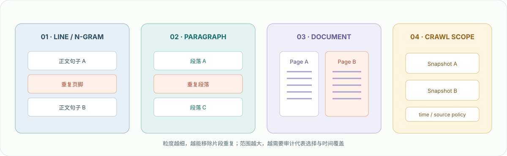
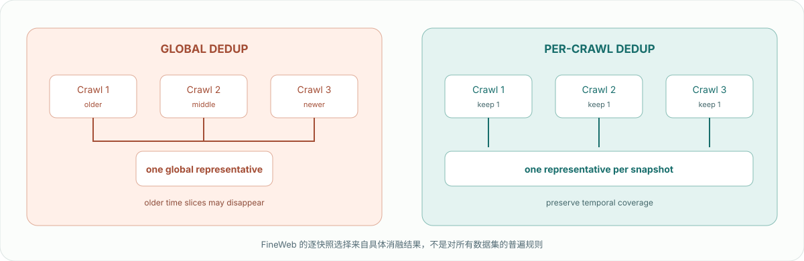

MODULE 09 / LLM DATA ENGINEERING
多粒度去重策略
从重复行到跨快照重复簇：去重粒度如何改变语料覆盖、代表样本和训练分布。
一篇网页里有一段重复页脚，另一篇网页只是转载了同一段正文，还有一个 URL 在多个 Crawl 快照中重复出现。它们都叫“重复”，但应该用同一种算法、在同一个范围内删除吗？
“重复”至少有四种粒度
去重粒度决定系统把什么当成一个可删除单元。粒度越细，越能去掉模板和片段；但也越容易把合法的共同知识、引用和标准文本当成重复。粒度越粗，语义边界更完整，却可能漏掉局部重复。

| 粒度 | 典型方法 | 适合发现 | 主要风险 |
|---|---|---|---|
| 行 / 句子 / n-gram | 精确字符串、suffix array、n-gram 哈希 | 导航、页脚、重复句、长片段 | 通用短句、引用、法律声明被误删 |
| 段落 | 规范化后 SHA-1 / SHA-256 | 跨网页复用的段落、模板块 | 同一段落可能在不同上下文中承担不同作用 |
| 整篇文档 | 精确哈希、MinHash、LSH | 镜像、转载、近重复页面 | 长文档只共享一小部分时不应整体删除 |
| 跨 Crawl 快照 | 跨快照索引、时间窗口 MinHash | 长期重复抓取与转载簇 | 把时间覆盖误当成重复噪声，删掉有价值的历史内容 |
近重复簇：阈值边与传递闭包
把每篇文档看作图中的一个节点；当一对文档通过 MinHash 候选并经复核达到相似度阈值时，就连一条边。聚类通常取图的连通分量。注意：相似关系本身不是传递的。可能有 A 与 B 相似、B 与 C 相似，但 A 与 C 不相似；连通分量仍会把 A、B、C 放在同一簇中。
这会产生链式合并（chaining）。例如 A–B 的相似度为 0.82、B–C 为 0.81，而 A–C 只有 0.55；若阈值为 0.8，连通分量仍会把三者视为一个簇。若目标是严格限制簇内任意两篇的差异，可以在连通分量之后增加 complete-linkage、代表文档复核或簇直径约束，但成本更高。
簇里留谁？代表文档策略影响语料偏差
如果簇里有转载源、镜像站、低质量聚合页和原始论文，随机保留一个副本并不一定是最好的选择。可选策略包括：质量分数最高、来源可信度最高、时间最早、正文最长、保留不同来源中的多样化版本，或按确定性规则选择。每一种策略都在优化不同目标。
DataTrove 的 MinHash 实现把重复对合并为连通分量，再通过 union-find 生成 cluster；其默认保留根节点，不等价于“质量最高来源优先”。如果你需要质量优先，应在聚类后显式计算代表候选并写入决策日志。另一个容易忽略的顺序问题是：若先去重、后质量过滤，而代表文档随后被过滤，其他副本可能已被丢弃，整个簇就没有保留项。FineWeb 的公开示例先完成基础过滤，再计算 MinHash 签名。
跨快照去重：FineWeb 的反直觉消融
直觉上，把 96 个 Common Crawl 快照放在一起全局去重，似乎能得到最干净的语料。但 FineWeb 的实验发现，全局去重会让旧快照中大量内容因为已出现在新快照而被删除；在论文所述的迭代方案中，最老快照有时被删掉高达 90% 的基础过滤数据。作者进一步发现，被保留下来的旧快照数据质量反而低于被删除的数据：前者包含更多广告、关键词列表和格式不佳文本。
论文比较了两种方案：全局 MinHash 去重后约得到 4T tokens；每个快照独立去重则约得到 20T tokens，并在随机抽样训练实验中达到与 RefinedWeb 相当的表现。作者据此采用逐 Crawl 独立去重，而没有继续对全部快照做更激进的全局去重。这不是“跨快照去重永远错误”，而是提醒我们：去重顺序会与来源时间、质量过滤和保留代表策略相互作用。

如何为目标语料选择粒度
- 先定义训练目标：通用预训练、时间敏感知识、领域语料、检索索引或评测集去污染。
- 明确重复对象：字节、规范化文本、行、段落、文档，还是同一时间窗口内的文档。
- 先用精确去重清除完全重复，再对近重复候选做 MinHash / LSH。
- 对连通分量检查簇大小、簇内相似度分布和代表来源。
- 比较全局、逐快照和滑动时间窗口三种范围的保留分布。
- 把去重前后的来源、语言、时间、token 和质量分数分层对照，并进行下游消融。
交互练习：改变去重范围，改变什么被保留？
以下是一个合成例子：同一文档在三个 Crawl 快照出现，质量分数不同。切换范围，观察代表文档选择的差异。
全局去重：三个快照合并成一个重复簇，只保留一个代表；若按“最新优先”，旧快照的时间覆盖会消失。
本章参考资料
- Penedo et al. (2024), FineWeb，§3.4 与 Appendix E：全局与逐快照 MinHash 消融。
- Lee et al. (2022), Deduplicating Training Data Makes Language Models Better：精确子串与近似文档去重。
- DataTrove MinHash implementation：重复边、union-find cluster 与代表节点过滤。
- DataTrove FineWeb example：基础过滤后按单个 crawl 执行 MinHash。